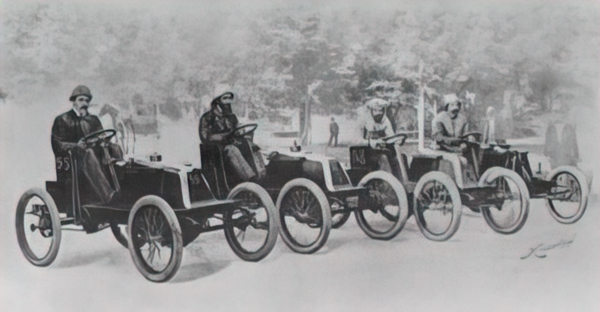
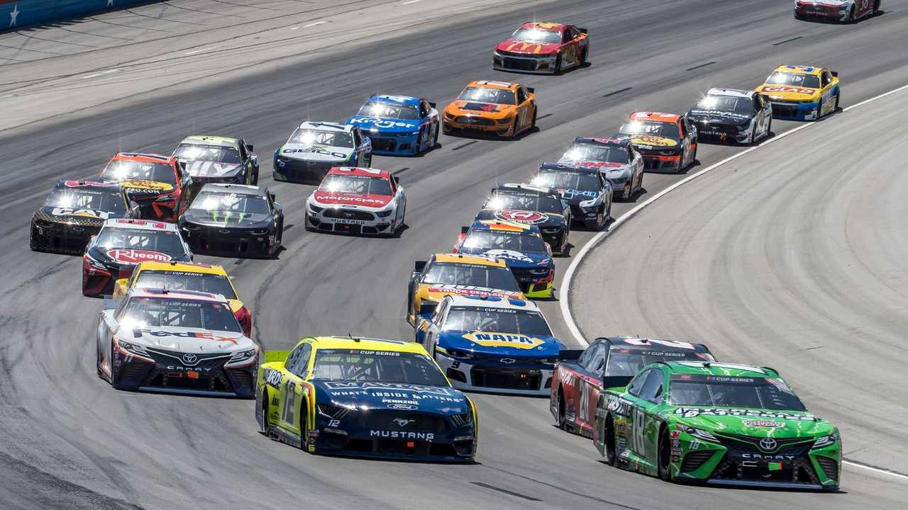
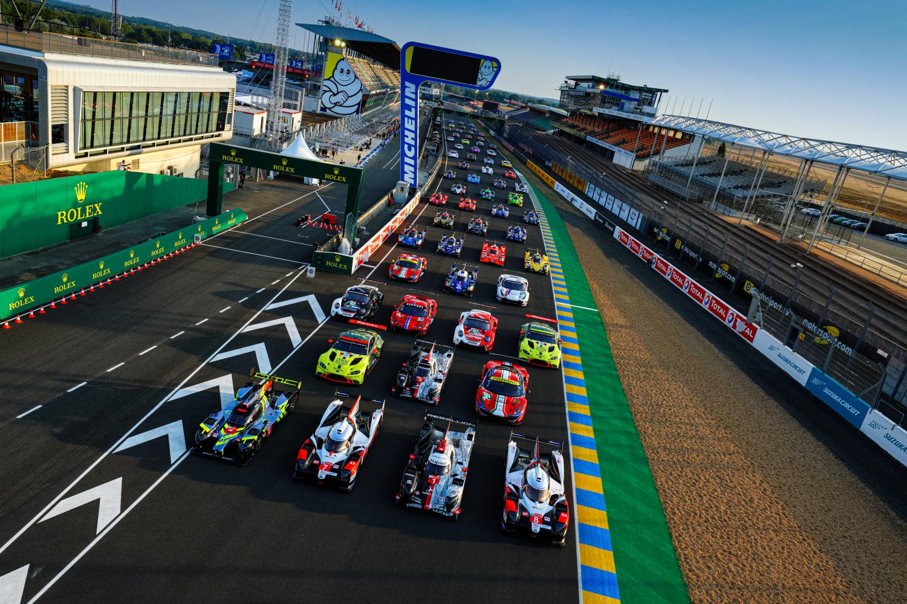
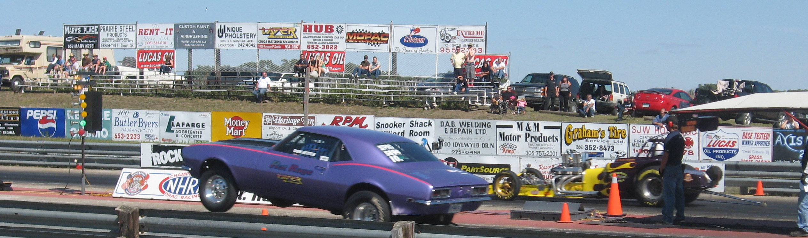
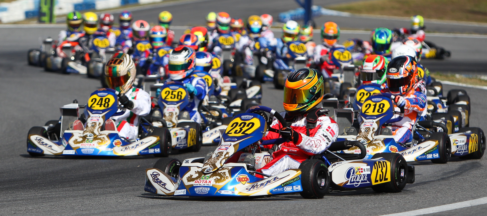

Добро пожаловать в
МИР АВТОГОНОК
Данный веб-сайт разработан с целью упрощения знакомства с автоспортом и его долгой и насыщенной историей, бурным настоящим, а также дать представление о том, что может ждать его в непредсказуемом будущем.
История Автоспорта
Интересным фактом является то, что автоспорт зародися еще до момента становления автомобилестроения одной из огромных ветвей технологического развития. Ранние стадии автомобилестроения можно охарактеризовать как "Гаражное дело". Для состоятельных людей это было формой развлечения. К появление гонок привело желание этих самых людей узнать, кто же смог построить лучший агрегат (их еще рано называть машинами в привычном понимании). Так первая гонка состоялась в далеком 1895 году на маршруте Париж-Бордо-Париж. С тех пор в автоспорте появилось множество направлений со своими уникальными особенностями, зачастую несвязанными друг с другом. Поэтому рассматривать каждый из них стоит в отрыве от остальных.
Формула
Формула-1 является пожалуй самым узнаваемым и престижным гоночным событием нашего времени. Однако также существует Формула-2, Формула-3 и даже Формула Е (электрические автомобили). Формула берет свое начало в 1950 году. Изначально соревнования носили название Мирового Чемпионата Водителей, но претерпели множество изменений, о которых можно прочитать в отдельной статье.
 Подробнее
Подробнее
NASCAR
Долгое время в США проводились полулюбительские кольцевые гонки, но из-за отсутствия инфраструктуры вокруг себя, привлекали очень мало зрителей. В 1948 году организация NASCAR взялась за подготовку подобных мероприятий для широкой публики. И достигла немыслимых успехов! Познакомится с ними можно на соответствующей странице.
 ПодробнееРоссийская Серия Кольцевых Гонок
В России также есть своя гоночная лига. В текущем формате РСКГ появилась в 1993 году, заменив чемпионаты и кубки страны, которые проводились с 1955 года. И хотя история РСКГ может показаться менее насыщенной завораживающими событиями в сравнении с международными соревнованиями, настоятельно рекомендуем с ней ознакомится.
 Подробнее
Подробнее
Гонки на выносливость
Форма гонок, задача которой проверить надежность техники и выносливость участников. Среди всех прочих видов гонок эндюранс (лат. endurance) зародился раньше всех. Именно к нему можно отнести первую гонку Париж-Бордо-Париж 1895 года, о которой говорилось ранее. В наше время марафоны достигли отметки в 24 часа. А победа в них является значимым достижением как для гоночной команды, так и для команды инженеров-конструкторов.
 ПодробнееРалли
Этот вид гонок отличается тем, что заезды главным образом прокладываются по автомобильным дорогам общего пользования, в формате «из пункта A в пункт B» с
прохождением контрольных точек.
В СССР вместо слова "ралли" предпочитали использовать слово "автопробег", которое весьма емко отображало смысл происходящего.
Драг-рэйсинг
Cпринтерский заезд с участием двух автомобилей. Драг появился на соляных озерах в США в начале ХХ века. Автомобильные энтузиасты хотели выявить самый быстрый автомобиль и устраивали для этого гонки по прямой. До 1951 года такие гоночные события были хаотичными, поскольку не существовало никаких регламентов и правил. Однако за исправление ситуации взялась Национальная Ассоциация Хот-Родов.
 ПодробнееДрифт
Дрифт - это техника прохождения поворотов в управляемом заносе. Видом спорта является парный дрифт. Свое развитие он начал на горных перевалах в японии в виде нелегальных уличных гонок. На узких извилистых дорогах дрифт был не требованием, а необходимостью, так как позволял в разы быстрее проходить крутые повороты.
 Подробнее
Подробнее
Картинг
Где впервые появился картинг точно не известно, однако раньше всего он нашел свою популярность в Англии. Причиной тому стала дешивизна спорта - цена карта составляла 100-200 долларов. Но любителям на смену быстро пришли профессионалы, самодельные карты не могли соперничать с просчитанными конструкциями из специально подобранных материалов. Картинг стал вторым автоспортом, по которому проводится чемпионат мира.
 Подробнее
НОВОСТНАЯ ЛЕНТА
Рассказывает о важнейших событиях происходящих в мире автоспорта. "Мир Автогонок" ставит перед собой задачу преподнести любую новость максимально лаконично.
Перейти к новостям